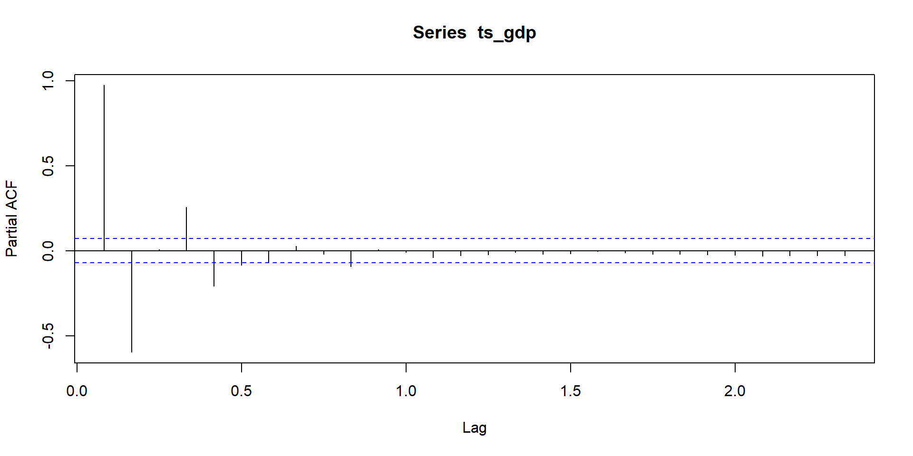

| Date | Series ID | Value | Realtime Start | Realtime End | |
|---|---|---|---|---|---|
| 1 | 1955-01-01 | USALORSGPNOSTSAM | NA | 2024-03-12 | 2024-03-12 |
| 2 | 1955-02-01 | USALORSGPNOSTSAM | NA | 2024-03-12 | 2024-03-12 |
| 3 | 1955-03-01 | USALORSGPNOSTSAM | NA | 2024-03-12 | 2024-03-12 |
GDP Analysis w.r.t. Unemployment
Milind and Ayeshee
Introduction
Forecast the GDP in USA by using Unemployment rate data and Leading Indicators of GDP data, and analyzing the relationship between GDP and Unemployment rate.
Dataset Overview
The Leading Indicators OECD dataset provides a normalized GDP series for the United States, which is useful for analyzing trends and forecasting future economic conditions.
The unemployment rate is another critical economic indicator that measures the percentage of the labor force that is unemployed and actively seeking employment.
Leading Indicators OECD: Reference Series: Gross Domestic Product (GDP)
Unemployment Rate (UNRATE)
| Date | Series ID | Value | Realtime Start | Realtime End | |
|---|---|---|---|---|---|
| 1 | 1948-01-01 | UNRATE | 3.4 | 2024-03-12 | 2024-03-12 |
| 2 | 1948-02-01 | UNRATE | 3.8 | 2024-03-12 | 2024-03-12 |
| 3 | 1948-03-01 | UNRATE | 4.0 | 2024-03-12 | 2024-03-12 |
Data Filtering
We see that the time period for both datasets is not overlapping. We can overlap the time period by taking a subset of data from each series, with common start and end date.
# A tibble: 3 × 5
date series_id value realtime_start realtime_end
<date> <chr> <dbl> <date> <date>
1 1960-01-01 USALORSGPNOSTSAM 101. 2024-03-12 2024-03-12
2 1960-02-01 USALORSGPNOSTSAM 101. 2024-03-12 2024-03-12
3 1960-03-01 USALORSGPNOSTSAM 101. 2024-03-12 2024-03-12 # A tibble: 3 × 5
date series_id value realtime_start realtime_end
<date> <chr> <dbl> <date> <date>
1 2023-06-01 USALORSGPNOSTSAM 100. 2024-03-12 2024-03-12
2 2023-07-01 USALORSGPNOSTSAM 100. 2024-03-12 2024-03-12
3 2023-08-01 USALORSGPNOSTSAM 100. 2024-03-12 2024-03-12 Data Filtering
# A tibble: 3 × 5
date series_id value realtime_start realtime_end
<date> <chr> <dbl> <date> <date>
1 1960-01-01 UNRATE 5.2 2024-03-12 2024-03-12
2 1960-02-01 UNRATE 4.8 2024-03-12 2024-03-12
3 1960-03-01 UNRATE 5.4 2024-03-12 2024-03-12 # A tibble: 3 × 5
date series_id value realtime_start realtime_end
<date> <chr> <dbl> <date> <date>
1 2023-06-01 UNRATE 3.6 2024-03-12 2024-03-12
2 2023-07-01 UNRATE 3.5 2024-03-12 2024-03-12
3 2023-08-01 UNRATE 3.8 2024-03-12 2024-03-12 Data Visualization
Let’s see a plot of the Lead Indicators of GDP dataset, to know how the value is changing with time:
GDP Data
Data Visualization
Similarly, let’s see a similar plot of the Unemployment rate:
Correlation Analysis
Correlation between Gross Domestic Product (GDP) and the Unemployment Rate to gain insights into economic dynamics of how the changes in unemployment impacts the GDP.
Two evaluation metrics: Correlation coefficient and Cross-Correlation Function (CCF) plot
The correlation value obtained is: -0.5799007Correlation Analysis
The correlation coefficient between GDP and the Unemployment Rate (UNRATE) is -0.58. This value indicates a moderate negative linear relationship between the two variables.
The negative sign indicates that as GDP increases, the unemployment rate tends to decrease, and vice versa. The magnitude of -0.58 suggests that the relationship is significant.
Correlation Analysis
- Now, Let us analyze the CCF plot:
Correlation Analysis
CCF plot shows the correlation between the two time series at different lags. A significant peak at lag -1 indicates a strong relationship between GDP and the unemployment rate at a lag of one time period.
It indicates that changes in GDP in the current period are associated with changes in the Unemployment Rate in the previous period.
GDP: Time Series Analysis
- The seasonal component in the decomposition plot shows that there is strong seasonality in the data, as the peaks and troughs repeat at consistent intervals. Let’s lot ACF and PACF to determine stationarity and order of the data.
GDP: ACF Plot
GDP: ACF Plot Analysis:
The plot displays a rapid decay in the ACF values from lag 0, where it starts at 1 showing a perfect positive autocorrelation with itself. T
The subsequent lags, suggest that the immediate past has a strong positive autocorrelation with the present, which quickly diminishes as the lag increases.
Since none of the bars extend beyond the significance bounds after lag 0, it indicates that there are no significant auto correlations at higher lags, which suggests that any autoregressive component would be of a very short memory.
GDP: PACF Plot
GDP: PACF Analysis
- The PACF plot suggests little partial autocorrelation at the lags examined, indicating that a lower order autoregressive term may be sufficient for modeling this time series data.
GDP: ADF Test
Augmented Dickey-Fuller Test
data: ts_gdp
Dickey-Fuller = -6.4106, Lag order = 9, p-value = 0.01
alternative hypothesis: stationary- Small p-value suggests stationary data.
UNRATE: Time Series Analysis
- This dataset also shows similar seasonality.
UNRATE: ACF Plot
- The coefficients start high and slowly decrease as the lags increase, but they remain positive and slowly taper off, suggesting a gradual decline in correlation with increasing lag. This type of ACF pattern is indicative an MA(q) model will be appropriate for the data.
UNRATE: PACF Plot
- Most of the partial autocorrelation coefficients are within the confidence bounds.This suggests that there is little autocorrelation at any lag beyond the immediate past, indicating that an AR(p) model with lower order will be sufficient.
UNRATE: ADF Test
Augmented Dickey-Fuller Test
data: ts_unemp
Dickey-Fuller = -3.2133, Lag order = 9, p-value = 0.08563
alternative hypothesis: stationary- Again, a small p-value indicates stationarity in data.
GDP: COVID Period
GDP: Before Imputing
- Setting COVID range to NA
GDP: Smoothing the Covid period
GDP: Before vs After Smoothing
UNRATE: COVID Period
UNRATE: Before Imputing
- Setting COVID range to NA

UNRATE: Smoothing the COVID Period
UNRATE: Before vs After Smoothing
ARIMA Model
Series: ts_gdp_new
Regression with ARIMA(3,0,2)(2,0,1)[12] errors
Coefficients:
ar1 ar2 ar3 ma1 ma2 sar1 sar2 sma1
2.5754 -2.2374 0.6550 -0.6951 0.3336 0.1742 -0.3452 -0.1641
s.e. 0.0587 0.1129 0.0556 0.0611 0.0382 0.1100 0.0371 0.1181
intercept xreg
100.3003 -0.0425
s.e. 0.1174 0.0074
sigma^2 = 0.00213: log likelihood = 1264.88
AIC=-2507.76 AICc=-2507.41 BIC=-2456.73
Training set error measures:
ME RMSE MAE MPE MAPE
Training set -0.0001176572 0.04585285 0.02223068 -0.0001553151 0.02221254
MASE ACF1
Training set 0.0222762 0.01006153ARIMA Summary
ARIMA model has been fitted to the ts_gdp_new time series data. The model includes an external regressor, unemployment data (xreg), and is structured with both non-seasonal and seasonal components.
ARIMA(3,0,2)(2,0,1)[12], indicates a non-seasonal component with 3 AR terms and 2 MA terms, alongside a seasonal component with 2 seasonal AR terms and 1 seasonal MA term with a period of 12, i.e. for monthly data.
The summary shows a goot fit of the model to the data, with a high value of log likelihood and low value of training set error. The AICC and BICC values are also quite low.
Regresion Equation
yt = β0 + β1zt + xt
Where:
β0 is the intercept term (100.3003)
β1 is the coefficient for the covariate series (z_t, -0.0425)
xt represents the ARIMA(3,0,2)(2,0,1)[12] error terms.
Regression Equation
xt = ϕ1xt – 1 + ϕ2xt – 2 + ϕ3xt – 3 − θ1ϵt − 1 − θ2ϵt − 2 + Φ1Xt − 12 + Φ2Xt − 24 − Θ1Et − 12 + ϵt
With the coefficients from your ARIMA model summary:
ϕ1=2.5754; ϕ2=−2.2374; ϕ3=0.6550
θ1=−0.6951; θ2=0.3336
Φ1=0.1742; Φ2=−0.3452
Θ1=−0.1641
ϵt is the error at time t.
Forecast: ARIMA Model
Forecasted Value for GDP: 100.0611 Vector AutoRegression (VAR) Model
VAR Estimation Results:
=========================
Endogenous variables: Y1, Y2
Deterministic variables: const
Sample size: 763
Log Likelihood: 701.94
Roots of the characteristic polynomial:
0.9927 0.9927
Call:
VAR(y = ts_data, type = "const", ic = "AIC")
Estimation results for equation Y1:
===================================
Y1 = Y1.l1 + Y2.l1 + const
Estimate Std. Error t value Pr(>|t|)
Y1.l1 0.999630 0.005625 177.722 < 2e-16 ***
Y2.l1 0.011509 0.003940 2.921 0.00359 **
const -0.031372 0.575376 -0.055 0.95653
---
Signif. codes: 0 '***' 0.001 '**' 0.01 '*' 0.05 '.' 0.1 ' ' 1
Residual standard error: 0.1496 on 760 degrees of freedom
Multiple R-Squared: 0.9828, Adjusted R-squared: 0.9828
F-statistic: 2.176e+04 on 2 and 760 DF, p-value: < 2.2e-16
Estimation results for equation Y2:
===================================
Y2 = Y1.l1 + Y2.l1 + const
Estimate Std. Error t value Pr(>|t|)
Y1.l1 -0.025480 0.006612 -3.854 0.000126 ***
Y2.l1 0.985443 0.004631 212.786 < 2e-16 ***
const 2.632333 0.676378 3.892 0.000108 ***
---
Signif. codes: 0 '***' 0.001 '**' 0.01 '*' 0.05 '.' 0.1 ' ' 1
Residual standard error: 0.1758 on 760 degrees of freedom
Multiple R-Squared: 0.9884, Adjusted R-squared: 0.9884
F-statistic: 3.237e+04 on 2 and 760 DF, p-value: < 2.2e-16
Covariance matrix of residuals:
Y1 Y2
Y1 0.02237 -0.01194
Y2 -0.01194 0.03091
Correlation matrix of residuals:
Y1 Y2
Y1 1.0000 -0.4541
Y2 -0.4541 1.0000VAR Model Summary
VAR is a multivariate statistical model used to capture the linear interdependencies among multiple time series.
VAR model with a constant term has been estimated with a high degree of fit for the time series data. Both endogenous variables are significantly influenced by their own first lags and slightly by each other, where Y1 and Y2 are showing a negative contemporaneous relationship. The model is well-specified, explaining a large proportion of the variance in the data, which is indicated by the high Multiple R - Square value for the estimates of Y1 and Y2.
Forecast: VAR
Forecasted Value for GDP: 100.2626 Forecasted Value for Unemployment: 3.821666